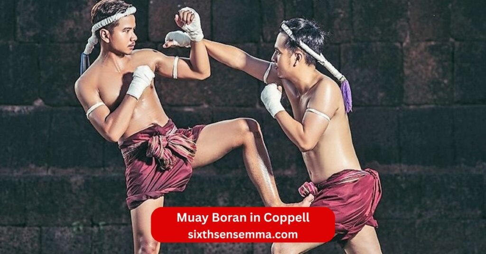
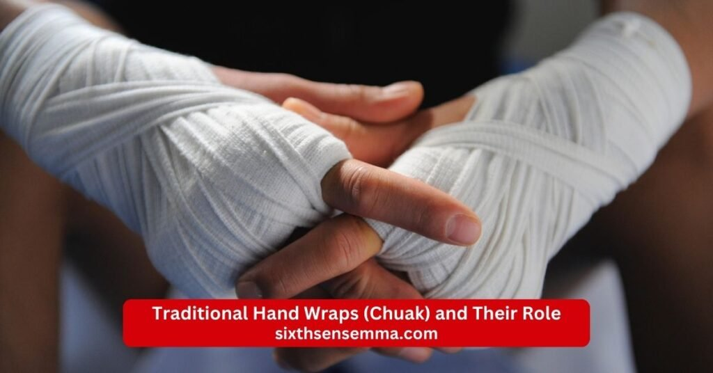

Muay Boran in Coppell Traditional Thai Martial Arts Training at SixthSense MMA

Folks in Coppell often search for muay boran near me or muay boran in der nähe when they want to explore this ancient martial art. At Sixth Sense Martial Arts we blend thai roots with modern muay thai to offer muay boran training. This fighting style draws from battlefield roots and serves as the base for muay thai. People ask muay boran meaning and it points to old Thai ways of combat using eight limbs.
Characteristics of Muay Boran in Coppell
Muay Boran in Coppell shines through key traits that set it apart from sport versions. At sixth sense martial arts classes focus on raw power and flow from old Thai ways. Muay boran stands as a full combat sport with no limits unlike ring rules. Muay boran techniques cover strikes and holds for total control. People compare muay boran vs muay thai and see difference between muay thai and muay boran in focus. Muay boran vs muay thai which is better depends on goals but muay boran wins for street use. Is muay boran dangerous yes in full force but we train safe. Is muay boran illegal no when done right.
Use of the Eight Limbs in Traditional Combat
The core of muay boran lies in using fists elbows knees and shins as weapons. This eight limbs approach turns the body into a full arsenal for close or far attacks. In Coppell sessions at sixth sense mma for muay we drill these to build power and speed. Muay thai fighters know this but muay boran adds wild angles from old battles. Techniques like flying knees or spins come from thai roots. Muay boran elbow techniques slice sharp for quick ends. Muay thai muay boran shares this but boran goes raw. Muay boran techniques list includes punches kicks and more. Practice makes them instinct for self-defense techniques.
Grappling, Throws, and Close-Range Techniques
Grapple work in muay boran pulls foes close for throws or locks. Unlike pure strikes this adds control in tight spots. At our macarthur blvd gym we pair it with brazilian jiu jitsu for ground edge. Muay boran training includes sweeps and takedowns from military training. Defense and muay focus keeps you safe up close. Muay thai vs muay boran shows boran has more holds. Muay boran muay thai blends well for full fights.
Traditional Hand Wraps (Chuak) and Their Role
Old muay boran uniform uses hemp ropes called chuak to wrap hands and arms. These protect bones and add grip for grabs. In muay boran classes we teach this for authentic feel though gloves come for safety. Ancient muay boran relied on them in wars. Muay thai and muay boran both wrap but boran keeps it simple. This builds tough skin and respect for past ways.

Protective Stance and Body Positioning
Muay boran stance stays wide and low for balance against rushes. Body twists hide weak spots while ready to strike. Muay boran style stresses this for survival not points. In valley ranch near classes we adjust for each person. Muay boran styles vary but all guard vital areas. Tradition with modern tweaks make it fit today.
Focus on Combat Effectiveness Over Scoring
Muay boran aims to end threats fast not win by judges. This shifts mind to real wins over show. Combat sport side fades for practical use. Beyond the ring it shines in self defense. Muay thai scores hits but boran seeks quick stops. Self-defense gains from this raw focus.
Styles of Muay Boran in Coppell
Different muay boran styles offer unique paths in Muay Boran in Coppell. At choose sixth sense mma pick what fits your build. Muay chaiya and muay boran link close as one branch. Like muay chaiya others adapt to land or foes. Muay korat brings force while more suit speed. Muay lopburi not listed but similar in quick hits. We teach these for varied skills.
Muay Chaiya – Defense and Footwork Techniques
Muay chaiya stresses tight guards and quick steps to dodge then counter. Muay boran techniques here flow smooth with elbows leading. Footwork circles foes for openings. In tx classes this builds evasion first. Box like moves but with knees added.
Muay Korat – Power-Based Striking Style
Muay korat uses tall stances for heavy punches and kicks. Power comes from core twists. This muay boran style fits strong builds. Drills at our gym build this force safe. Modern muay thai softens it but we keep raw edge.
Muay Lopburi – Speed and Precision Movements
Quick sharp strikes define muay lopburi. Precision hits weak points fast. Speed drills sharpen this. Blends well with jiu-jitsu for full mma. Muay boran here teaches hit and move.
Modern Practice of Muay Boran in Coppell
Muay Boran in Coppell brings old Thai combat into daily classes at Sixth Sense Martial Arts. Students practice moves that fit real life while keeping respect for thai roots. The gym on 817 s macarthur blvd mixes history with current fitness goals. Muay boran training here helps build strong habits for body and mind.
Muay Boran as a Self-Defense System Today
Muay boran works well for self defense against sudden attacks with no rules. Full use of eight limbs plus grabs stops threats quick and direct. In Coppell we drill these for street feel not sport points. Self-defense techniques grow confidence to handle real pressure calm.
Traditional Training Methods in a Modern Setting
Old ways like partner drills and shadow flows happen in safe clean rooms. Muay boran training adds pads and timers for steady progress without old risks. Martial arts training keeps core hard work but with rest and form checks. Sixth sense mma offers this mix to fit busy schedules in tx.
Emphasis on Real-World Fighting Readiness
Classes stress moves that end fights fast over pretty forms. Muay boran stands ready for uneven odds from battlefield roots. Combat sport side takes back seat to practical survival skills. Fighting style trains instinct to react right under stress.
Relationship Between Muay Boran in Coppell and Muay Thai
Muay Boran in Coppell connects direct to muay thai as its raw parent form. Muay thai and muay boran share strikes but differ in freedom. Muay thai muay boran shows how war art turned ring game. Muay thai boran highlights shared blood in kicks and clinch.
Muay Boran as the Foundation of Muay Thai
Muay boran gave birth to modern muay thai with all body weapons. Muay thai fighters use toned down versions of old wild strikes. Muay boran muay thai passes knee elbows and shin kicks core. Thai martial arts started here for total war not rounds.
How Muay Thai Became a Regulated Sport
Safety rules brought gloves time limits and no ground fights. Muay thai vs muay boran marks shift to fair scored bouts. Bans on throws and headbutts made it crowd safe. Muay thai grew popular worldwide as organized combat sport.
Techniques Shared Between Muay Boran and Muay Thai
Core hits like round kicks teeps and elbow slices appear in both. Techniques like clinch knees flow same at start. Muay boran techniques add rough edges to ring smooth moves. Muay boran elbow techniques turn sharp in sport control.
Key Differences Between Traditional and Sport Fighting
Muay boran differences allow full throws sweeps and no time waste. Sport stops at points while boran seeks real finish. Muay boran style ignores rounds for quick dominance. Is muay boran dangerous higher in raw form yes.
Training Experience of Muay Boran in Coppell
Muay Boran in Coppell delivers hard yet smart workouts at our spot. Muay boran classes push limits safe with step by step builds. Class at sixth sense martial fits adults and youth for growth. Sixthsensemma focuses on real feel from ancient martial art.
Conditioning and Physical Endurance Development
Heavy bag runs and pad holds build tough lungs and muscles. Muay boran training repeats strikes to harden shins and core. Long rounds grow ability to keep power late. Full effort sessions raise overall fitness high.
Mental Discipline and Warrior Mindset
Pain drills teach push through and stay clear headed. Mental discipline forms from calm counters under hits. Warrior view treats hard training as path to strength. Muay boran grows respect for effort and calm in chaos.
Controlled Training for Safety and Skill Growth
Light spar and gear keep injuries low while skills rise. Controlled contact lets test muay boran moves real but safe. Coaches adjust speed and power per level. Steady safe reps lead to sharp instinct over time.
Who Should Learn Muay Boran in Coppell by sixth sense
Muay Boran in Coppell suits many paths at Sixth Sense Martial Arts. Choose sixth sense mma for true blend of old and new strikes. All backgrounds find fit in this thai martial arts style. #sixthsensemartialarts calls those ready for real work.
Beginners Interested in Traditional Martial Arts
Fresh starters learn basics slow with no rush or prior skills. Beginners grasp muay boran stance and simple eight limbs use first. History stories add interest to hard drills. Safe start builds base strong for future steps.
Muay Thai Practitioners Seeking Deeper Knowledge
Sport strikers add old raw layers to their clean ring game. Muay thai practitioners dig into muay boran techniques for full roots. Styles like muay chaiya or muay korat bring new angles. Deeper grasp boosts overall fight edge.
Individuals Focused on Serious Self-Defense
People wanting no games tools choose muay boran for raw stops. Serious self-defense drills cover close messy fights and quick wins. Self-defense techniques test against full resist often. Practical brutal focus fits real world needs best.
Benefits of Learning Muay Boran in Coppell
Muay Boran in Coppell delivers real gains that go far past basic fitness at Sixth Sense Martial Arts. Students pick up tools from this ancient martial art that fit everyday needs. Muay boran training builds a strong base for body and mind alike. Class at sixth sense martial turns old thai martial arts into modern life wins.
Practical Self-Defense Skills
Muay boran teaches direct ways to handle real threats with self-defense techniques. Full eight limbs use plus close grabs stop attacks fast and firm. In Coppell drills focus on street scenarios not ring games. Self defense grows sharp from muay boran moves that work under pressure.
Improved Strength, Balance, and Coordination
Hard strikes and stance work build muscle power across the body. Muay boran training demands steady low positions for solid balance. Repeated kicks and turns sharpen hand eye flow and coordination. Full effort sessions raise overall athletic feel high.
Increased Confidence and Mental Toughness
Facing tough partner drills pushes past comfort for inner strength. Mental toughness forms from calm counters in chaos. Increased confidence comes when skills prove real in rolls. Muay boran mindset carries calm to daily challenges.
Cultural and Traditional Martial Arts Knowledge
Classes share stories from thai roots and battlefield roots. Students learn respect bows and old customs tied to moves. Cultural side adds depth to physical work with history lessons. Traditional martial arts knowledge connects past warriors to today.
Why Choose SixthSense MMA for Muay Boran in Coppell
SixthSense MMA stands strong for Muay Boran in Coppell with true focus on roots. Choose sixth sense mma for blends that keep ancient muay boran alive safe. Location at 817 s macarthur blvd tx 75019 serves easy access. Sixth sense mma offers paths that fit real goals.
Authentic Traditional Training Approach
We stick close to old ways with muay boran techniques and forms. Authentic drills include chuak wraps and raw flows when ready. Tradition with modern tweaks keep history pure yet practical. Muay boran classes honor thai martial arts full spirit.
Experienced Coaches with Practical Knowledge
Coaches bring years from muay thai fighters lines and old styles. Experienced eyes spot form fixes and push safe limits. Practical knowledge covers street use not just sport wins. Guidance blends muay chaiya muay korat and more smooth.
Safe and Structured Learning Environment
Gear and control rules protect while skills grow steady. Safe rounds build trust for harder work later. Structured plans map progress clear for each student. Clean space supports focus and respect always.
Personalized Training for All Skill Levels
New or seasoned get adjustments to match current ability. Personalized feedback speeds right growth without rush. All skill levels find challenge and support mixed perfect. Private or group options fit personal paths best.
Contact us
Reach out to the team at SixthSense MMA for questions about Muay Boran in Coppell or any class. The academy in Coppell Texas welcomes inquiries from student of every age and level. Instructor and coach stand ready to help with enroll details or trial session. This martial arts school focuses on self defense skills and physical fitness in a supportive environment. Contact options make it simple to start your path in martial arts in coppell. Many find the dojo easy to connect with for kid programs or adult mixed martial arts.
- Phone 469 972 7800
- Email: info@sixthsensemma.com
- Location: 817 S MacArthur Blvd #100 Coppell TX 75019 United States
Conclusion
Muay Boran in Coppell opens doors to strong self-defense fitness and culture at our gym. Sixth Sense Martial Arts keeps the old ways alive in safe modern classes. Gains in body mind and spirit last long after sessions end. Step in and build your own warrior path now.
Follow Us on Social Media
Stay connected with Sixth Sense MMA through our social media channels. Follow us for class updates, training tips, and a closer look at our self defense community.
FAQ’s
There is no age that is truly too late to start Muay Thai for training, fitness, or self-defense. People in their 40s, 50s, and even 60s begin successfully and enjoy benefits like improved health and confidence. Professional competition becomes harder with age due to recovery time and reflexes, but amateur fights or hobby training remain open. Listen to your body, start slowly, and choose supportive gyms.
No, full traditional Muay Boran is not allowed in MMA. It includes deadly techniques like headbutts, groin strikes, eye pokes, and ground attacks banned under unified MMA rules. Elements of Muay Boran influence modern Muay Thai used in MMA, but lethal or unrestricted moves are prohibited for safety.
Yes, Muay Boran is older than modern Muay Thai. Muay Boran refers to ancient Thai fighting styles from centuries ago, developed for warfare and self-defense. Modern Muay Thai evolved from Muay Boran in the 1930s with rules, gloves, rounds, and bans on dangerous techniques to make it a regulated sport.
Yes, Muay Boran is highly effective for self-defense. Designed for real combat without rules, it includes strikes, clinch work, throws, joint locks, headbutts, and techniques targeting vulnerable areas. It offers practical tools for street scenarios, though modern training often focuses on safer applications.
In 3 months of consistent training (3-5 times per week), you can learn solid fundamentals: basic stance, punches, kicks, knees, elbows, footwork, and simple combinations. You’ll build decent stamina, coordination, and confidence to shadowbox or hold pads effectively. Light sparring may start, but advanced skills, timing, and fight readiness take longer—often 6-12 months for intermediate level.
It depends on the person, but many find Brazilian Jiu-Jitsu (BJJ) harder mentally due to its complex techniques, chess-like strategy, and need for precise positioning on the ground. Muay Thai is physically tougher with intense striking, pain from shins/checks, and high cardio demands. BJJ requires more patience and problem-solving; Muay Thai demands toughness against impact. Both are challenging in different ways.
Yes, absolutely—you can start Muay Thai at 40 and thrive. Many people in their 40s and older begin for fitness, stress relief, or fun, seeing great improvements in health and skills. Focus on recovery, proper warm-ups, and progressive training to avoid injury. Competition is possible at amateur levels, though pros are rare at this starting age.
Yes, Muay Boran was used in war. Developed as an unarmed combat system for Thai soldiers on battlefields when weapons failed, it included lethal techniques for survival. Historical accounts link it to military training in ancient kingdoms like Sukhothai and Ayutthaya, with stories of warriors like Nai Khanomtom using it against enemies.
Train with us in Coppell
The first class is free. Shorts, a t-shirt and a water bottle. We lend the rest.
Book a free class